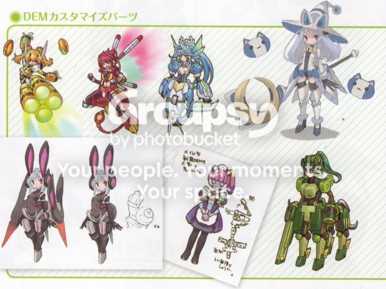

DEM คืออะไร?
DEM หรือชื่อเต็มๆ Deus Ex Machina ที่แปลว่า "เทพจักรกล" เป็นเผ่าพันธ์ที่ 4 ต่อจาก อีมิล ไททาเนีย และ โดมิเนี่ยน
เผ่านี่ถูกเรียกหลายชื่อ เช่น "เผ่าพันธ์จักรกล" หรือ "ผู้รุกรานมิติ"
ใน 1 Account จะมีช่องสร้างตัวละครที่ล็อกไว้ให้สร้าง เดม โดยเฉพาะ 1 ช่อง ไม่สามารถสร้างเผ่าอื่นในช่องนั้นได้
แต่ในช่องอื่นๆอีก 3 ช่องนั้นสามารถสร้างได้ทุกเผ่า รวมถึงเดมด้วย
Feature
- มี 2 รูปแบบในตัวละครตัวเดียว
- - Normal form(นอร์มอล ฟอร์ม)「ノーマルフォーム」 :
- มีความอิสระในการใช้อาวุธและอุปกรณ์สวมใส่ สามารถสวมใส่อุปกรณ์ต่างๆของทุกสายอาชีพได้
แต่อ่อนแอไม่เหมาะกับการเอาไปใช้สู้

- รูปแบบสำหรับต่อสู้โดยเฉพาะสามารถปรับแต่งความสามารถต่างๆของรูปแบบนี้ได้ตามต้องการ

- ใจ, จิตวิญญาณไม่สมบูรณ์
- - ไม่สามารถเปลี่ยนอาชีพได้(ไม่สามารถใช้เข็มกลัดอาชีพ Breeder และ Gardener ได้)
- Machina form ไม่สามารถใช้การ Possession(สิง) ได้
(ใน Normal form สามารถใช้ Possession ในสถานะเจ้าของร่างได้)
*ยกเว้น เกราะรูปแบบ Set Form Part ในร่าง Machina form สามารถใช้ Possession เป็นเจ้าของร่างได้*

- ไม่สามารถใช้ Marionette ได้
- ไม่สามารถใช้สกิล H.E.ART ได้
- ระบบการเติบโตแตกต่างจากเผ่าอื่นๆ
- - ใช้ Customize room ในการปรับแต่งความสามารถต่างๆ
สถาพโดยรวม
การเล่นแบบเติมเงินและ ไม่เติมมีความยากง่ายต่างกันมาก
- มีสเตตัสเริ่มต้นที่ต่ำ
- - การเริ่มต้นโดยที่ไม่มีการเติมเงินซื้อของมาช่วยในการเล่นจะมีค่าสเตตัสที่ต่ำกว่าอีก 3 เผ่าที่เหลือมาก
จำเป็นต้องใช้ความอดทนในการเล่นสูงกว่ามาก
- ในทางกลับกันหางมีการเติมเงินซื้อของมาใช้จะทำให้มีความสามารถในตอนเริ่มต้นเหนือกว่า 3 เผ่า
- ต้องมีการวางแนวทางการเล่นให้ดี
- - ค่า EXP และ JobEXP นั้นมีความจำเป็นและใช้ในการซื้อชิพเยอะมาก
หากทำผิดพลาดอาจทำให้ต้องเสีย EXP นั้นไปฟรีๆ
- สเตตัสและสกิลนั้นจำเป็นต้องทำให้สมดุล หากสเตตัสมากเกินไป จะไม่มีสกิลให้ใช้
ในทางกลับกัน หากมีสกิลมากเกินไปจะทำให้มีสเตตัสต่ำ
- สามารถใช้สกิลได้ถึงคลาส 2 และสกิลเฉพาะของเผ่าเดมเท่านั้น ไม่มีสกิลคลาส 3 ให้ใช้
- มีสกิลของทุกอาชีพของ 3 เผ่าแต่ก็ไม่สามารถใช้สกิลได้ครบ(ไม่มีสกิลขั้นสูงและสกิลพิเศษเฉพาะอาชีพ)
- มีอีเวนท์ต่างๆแตกต่างจาก 3 เผ่า
การเติบโต

เดมนั้นมีการเติบโตแตกต่างจาก 3 เผ่า เดมนั้นจะต้องใช้ Part และ Chip ในการ "Customize" ความสามารถของเดม
โดยชิพนั้นใช้เพื่อเพิ่มสเตตัส และเพิ่มสกิลที่ใช้ได้ การใช้ชิพในการปรับแต่ง นี่จะเรียกว่า "DEMIC"
- การใช้ค่า EP ในการเพิ่ม Cost limit (CL) และการ Level Up
- - Cost limit (CL) เมื่อเพิ่มขึ้นจะทำให้ใส่ชิพได้มากขึ้น หรือก็คือเพิ่มพื้นที่ใน"DEMIC"นั้นเอง
โดยใช้ค่า Ep ในการเพิ่ม CL
- เดมใช้ EP ในการ Level Up โดยนับจาก CL ครบทุกๆ 4 CL จะมีการ Lv.Up 1 Lv.
นั้นหมายถึงยิ่งมี Lv. สูงยิ่งมีพื้นที่ที่ใส่ชิพมากขึ้นและสามารถใช้ชิพที่มีประสิทธิภาพสูงได้
- ชิพในพื้นที่ "DEMIC" นั้นจะเป็นตัวกำหนดความเก่งของเดม ยิ่ง Lv. สูงมาก ก็จะมีพื้นที่ในการใส่ชิพมาก
หาก Lv. สูงแต่ไม่ได้ใส่ชิพลงไปใน "DEMIC" เลยจะไม่มีทางเก่งได้เลย
- - หาก Lv. สูงเกินไปโดยไม่ได้เก็บ EXP จะทำให้ไม่มี EXP เพียงพอในการซื้อชิพให้เก่งพอที่จะสู้กับ
มอนสเตอร์ในระดับ Lv. เดียวกันหากไปเก็บกับมอนที่อยู่ในระดับLv.ต่ำกว่าจะทำให้ได้ EXP น้อยลงมาก
ในทางกลับกันหากไม่มีการเพิ่ม Lv. เลย และเก็บ Exp อย่างเดียว จะทำให้ไม่สามารถสู้กับมอนใน
ระดับสูงกว่านั้นได้ทำให้เก็บ EXP ช้ากว่าที่ควรจะเป็น
- ชิพสเตตัสนั้นใช้ EXP ในการซื้อ
- - สามารถเพิ่มสเตตัสโดยการวางชิพลงบนแผง "DEMIC"
- ชิพสเตตัสมีการแบ่งประเภทเป็น Str, Dex, Int, Vit, Agi และ Mag เหมือนกับสเตตัสปกติของ 3 เผ่า
- ชิพสเตตัส มีการแบ่ง Rank 3 ระดับ ยิ่ง Lv. สูง ก็จะมีชิพที่ Rank สูงขึ้นมาขาย
ซึ่งในชิพ Rank 3 นั้นจะประหยัดพื้นที่ได้มากที่สุด แต่มีราคา EXP แพงมาก
- ชิพที่มีชื่อเดียวกันสามารถใส่ซ้ำได้แค่ 10 ชิ้นเท่านั้น
- - สามารถเพิ่มสกิลโดยการวางชิพสกิลลงบนแผง "DEMIC"
- ชิพสกิลบางชนิดมีการกำหนด Lv. ของตัวละคร
- ชิพสกิลมีการแบ่งประเภทเป็น FT, SU, BP และสกิลทั่วไป
- - เมื่อใส่ชิพ LC ลงบนแผง "DEMIC" จะทำให้เพิ่มโบนัสสเตตัส
เหมือนโบนัส Job ของ 3 เผ่า สามารถใส่ได้เพียง 1 ชิ้นเท่านั้น
- ชิพ LC นั้นมีระดับ Lv. ยิ่ง Lv. สูงยิ่งได้โบนัสสูง
- ชิพ LC แบ่งเป็น 3 ประเภท ได้แก่ F, S และ E และในประเภท F และ S จะแบ่งเป็น A, B และ C อีก
ส่วนใน E จะมีเพียง A เท่านั้น ซึ่งในแต่ล่ะแบบ ให้ค่าสเตตัสไปคนละทาง

- - พาร์ทต่างๆก็มี +สเตตัส เมื่อส่วมใส่จะทำให้ได้รับโบนัสสเตตัสเพิ่ม คล้ายๆกับเสื้อ + สเตตัสของอีก 3เผ่า
Normal form และ Machina form
เดมนั้นมี 2 รูปแบบในตัวละครตัวเดียว คือ "Normal form" และ "Machina form" ตามที่กล่าวไว้ข้างต้น
สามารถเปลี่ยนฟอร์มได้โดยการคลิกขวาที่ตัวละครและเลือกคำสั่ง 「フォームチェンジ」[Form Change]


- Normal Form
ในร่างนี้จะมีสเตตัสที่ต่ำมาก แต่สามารถสวมใส่ ชุด เครื่องประดับ และ ได้เกือบทุกชนิด
ยกเว้นที่ของจำกัดเผ่าและของของคลาส 3 ในร่างนี้ก็ไม่สามารถสวมใส่ได้
- - ชิพที่ถูกติดตั้งบน "DEMIC" ทั้งหมดถูกปิดการใช้งาน
- ไม่สามารถใช้ความสามารถของพาร์ทที่ถูกติดตั้งลงไปได้
- สเตตัสพื้นฐานทั้ง 6 ค่า(Str, Dex, Int, Vit, Agi และ Mag) ถูกลบให้เป็น 5 ทั้งหมด
เนื่องจาก"DEMIC"ถูกปิดการใช้งาน (หากสวมใส่อุปกรณ์หรือใช้ไอเทมที่เพิ่มสเตตัสก็ยังเพิ่มได้ตามปกติ)

- สามารถติดตั้ง ชุด เครื่องประดับ และ อุปกรณ์ที่มีการ Possession ได้
แต่ไม่สามารถ Possession ตนเองใส่ ชุด เครื่องประดับ และ อุปกรณ์ได้
- สามารถติดตั้ง ชุด เครื่องประดับ และ อุปกรณ์เฉพาะของแต่ล่ะอาชีพได้
(เช่นสามารถถือธนูของอาเชอร์ และ ใส่เกราะของเบลดมาสเตอร์ได้)
- สามารถใช้สกิลที่ติดมากับ ชุด เครื่องประดับ และ อุปกรณ์ที่ติดตั้งได้

- Machina Form
เป็นรูปแบบสำหรับต่อสู้โดยเฉพาะ ไม่สามารถสวมใส่อุปกรณ์อื่นๆได้นอกจาก พาร์ท ของเดมเท่านั้น
- - ชุดและอุปกรณ์ทุกชิ้นที่ติดตั้งใน Normal Form จะถูกยกเลิกความสามารถทั้งหมด
และไม่สามารถถอดได้เมื่ออยู่ในร่างนี้
- - หากมีไอเทมต่างๆเก็บไว้ในส่วนอื่นๆนอกจากส่วน Body ใน Normal Form
เมื่อเปลี่ยนร่างเป็น Machina Form จะถูกรวมมาไว้ในส่วน Body ทั้งหมด
- หากติดตั้งชุด หรือ อุปกรณ์ที่มีการ Possession ใน Normal Form
เมื่อเปลี่ยนร่างเป็น Machina Form การ Possession ทั้งหมดจะถูกยกเลิก
- ลักษณะรูปร่างของ Machina Form จะเป็นไปตามการ Customize parts ของเรา

- ในการ Customize parts นั้นพาร์ทบางชิ้นมีสกิลพิเศษและโมชั่นที่แตกต่างกันออกไป

- ในการ Customize parts นั้นต้องทำการติดตั้งพาร์ทใน Customize room เท่านั้น


Set Form Part

เป็นรูปแบบนึงของร่าง Machina Form เป็นพาร์ทที่ติดตั่งส่วนมือ

- - Set Form Part สามารถใช้การ Possession ได้ โดยแบ่งเป็น ช่อง Possession 1, 2 และ 3
เสมือนกับการ Possession ที่ อาวุธ, เกราะ และเครื่องประดับ ตามลำดับ
- ผู้ที่ทำการ Possession ในช่อง Possession 1 จะแสดงตัวออกมา

พาร์ท Set Form Part ที่มีในในขณะนี้
- オートマタユナイトフォーム[Automata Unite Form]

- キマイラフォーム [Chimera Form]

- バイコーンフォーム[Bicorn Form]

- シュトルツフォーム[Stolz Form]

- ヴィルトカッツェフォーム[Wirth Katze Form]

วิธีหา EP
DEM นั้นต้องใช้ EP ในการ Lv. Up และการจัดชิพใน DEMIC การหา EP จึงเป็นมากสำหรับ DEM เราสามารถหาได้จาก
- - H.E.ART System
- - การล็อกอิน
- - เมื่อล็อกอินจะได้ EP 10 สามารถทำได้ 1 ครั้งต่อวัน
- - ทักทายใครก็ได้จะได้ EP ในช่วง 1-11 สามารถทำได้ 1 ครั้งต่อวัน
- ค่า EP ที่ได้จากการทักทายจะได้เพิ่มขั้นตามจำนวนเพื่อนใน Friend list
- จำนวนคนใน Friend list หาร10 มีเศษปัดทิ้ง แล้ว + 1 EP
เช่น มีชื่อเพื่อนอยู่ 19 คน (19/10)+1 = 2 เพราะฉะนั้นค่าEP ไที่ได้รับเมื่อมีชื่อเพื่อน 19 คนคือ 2
มีชื่อเพื่อนอยู่ 20 คน (20/10)+1 = 3 เพราะฉะนั้นค่าEP ไที่ได้รับเมื่อมีชื่อเพื่อน 20 คนคือ 3
- - เมื่อทำเควสสำเร็จจะได้รับ EP
- ในเควสธรรมดา เมื่อทำเสร็จแล้วจะได้ 3 EP *
- ในเควส EP ทั้งเควสล่าและส่งของ เมื่อทำเสร็จแล้วจะได้ 15 และ 30 EP *
- - เควส EP(ล่า)ในช่วง Lv. 10-60 จะได้ 15 EP *
- เควส EP(ล่า)ในช่วง Lv. 61-100 จะได้ 30 EP *
- เควส EP(ส่งของ)ในช่วง Lv. 9-60 จะได้ 15 EP *
- เควส EP(ส่งของ)ในช่วง Lv. 59-100 จะได้ 30 EP *
- เควส ล่าบอสใน Gate ในช่วง Lv. 10-110 จะได้ 30 EP *
- - จำนวนสมาชิก คูณด้วย 2 แล้วบวกด้วย 30 = MAX EP
เช่น มีสมาชิกอยู่ 12 คน (12x2)+30 = 54 เพราะฉะนั้นค่า MAX EP ของสมาชิก 12 คนคือ 54
หากมีจำนวนสมาชิกในริงครบ 40 คน จะมีค่า MAX EP = 110
- - เมื่อเดมทำ อีเวนท์ ต่างๆบางอีเวนท์จะมีได้รับค่า EP ไปเก็บใน EP Battery
โดยค่า EP ใน EP Battery สามารถนำออกมาใช้ตอนไหนก็ได้ซึ่ง EP Battery
จะอยู่ใน Customize room เหมือนกับ Customize parts และ DEMIC
EP ใน EP Battery สามารถได้รับจาก
- - อ่าน DEManual (ได้รับรวมแล้ว 40 EP)
- อีเวนท์สกิลพ้อยๆต่างๆ(อีเวนท์ล่ะ 10 EP)
- อีเวนท์ キカイのココロ[Heart of machine](ได้ 10 EP)
- อีเวนท์ออโต้มาตะ(อีเวนท์ล่ะ 10 EP)
- อีเวนท์ สู้กับโดมิเนียนดรากอนเพื่อปลด Reserve skill(ได้ 10 EP)
.
.
[Preparing]
.
.
[Preparing]
.
.
[Preparing]
.
.